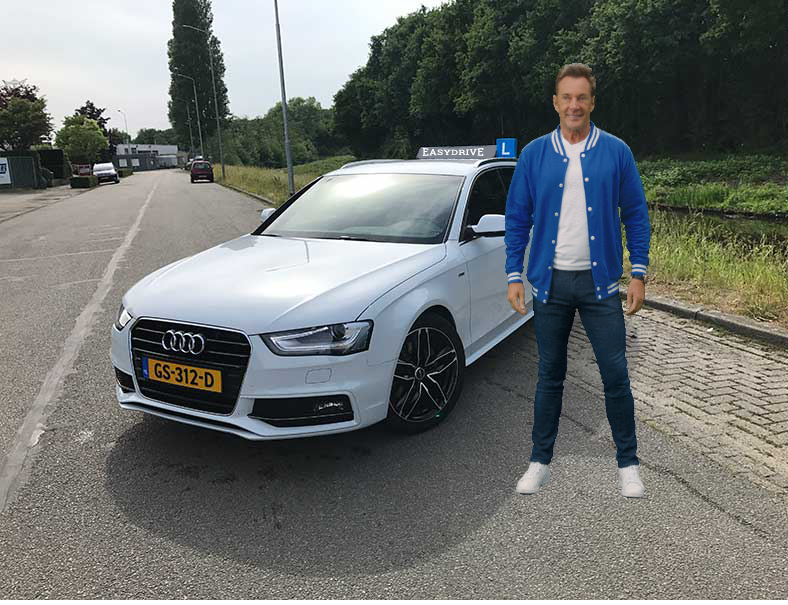
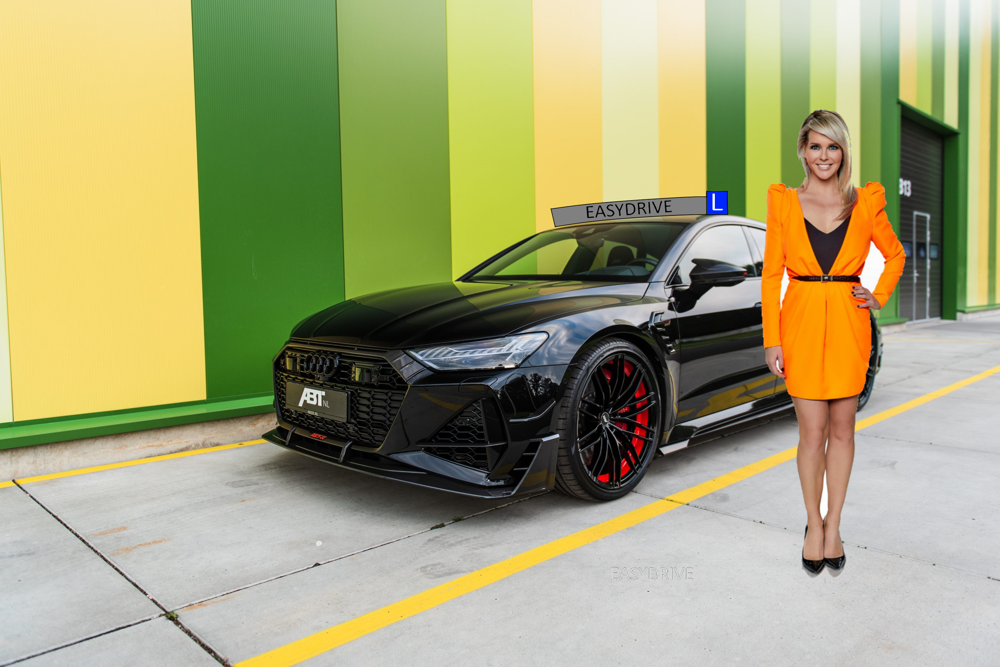

Wie zijn wij?
Wij zijn EasyDrive, opgericht in het jaar 1955. Onze directeur is Hans de Jong.
• Bij ons leer je op een relaxte manier autorijden in een sportieve en veilige auto. • Tijdens je hele rijopleiding word je begeleid door één vaste instructeur/instructrice. • Ons doel is om ervoor te zorgen dat je in één keer slagen! • We geven op een duidelijke en gestructureerde manier les. • Het is mogelijk om eerst een proef-rijles te nemen voordat je gaat beginnen.

